A caliper is a tool that can be used to measure outside dimensions, inside dimensions, or depths of holes.
Vernier scales have normal scale components, but also incorporate a small secondary scale that subdivides major increments. This secondary scale is based on a second scale that is one increment shorter than a main scale. If the secondary scale is compared to the main scale, it will indicate relative distance between two offsets. It is generally located on the smaller sliding portion of the caliper. It gives the least significant digits in the reading, and sub-divides a mark on the main scale into 10, 20, or 50 subdivisions. Read the vernier scale at the point where a vernier line and a main scale line best line up. Combine the main scale reading with the vernier scale reading to get a final reading.
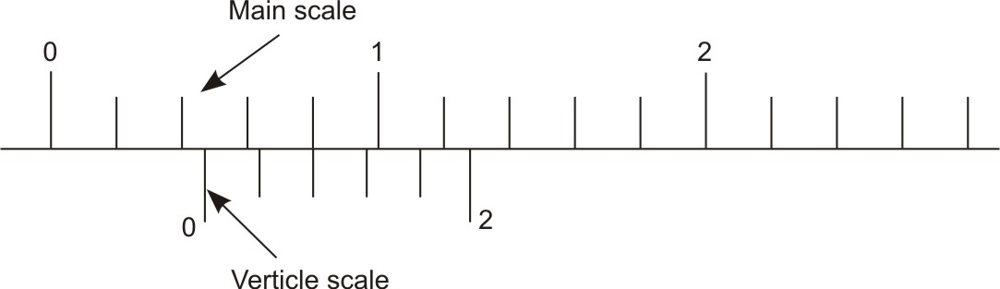
Figure 1: Vernier scale Vs. Main scaleMost common measuring instruments have a simple scale. For example, in using a ruler, the ruler is placed next to the item being measured and the mark closest to the end of the item is recorded. If we want increased precision, we use a ruler with finer divisions on the scale, that is a smaller instrument least count.
On a ruler with a coarse scale, least count of 1 cm, the specimen is between 3 and 4 cm, and we estimate it to be about 3.3 cm.
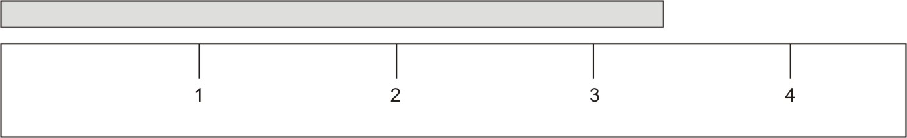
Figure 2: Coarse scaleOn a ruler with a finer scale, least count of 0.1 cm, the specimen is between 3.3 and 3.4 cm, and we estimate it to be about 3.38 cm.
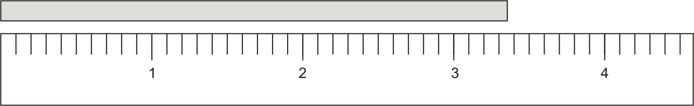
Figure 3: Finer ScaleThe ability to use high precision scales is limited by the spacing between the marks. Thus it is easy to have a least count of 1 mm, more difficult to have a least count of 0.2 mm, and virtually impossible to have a least count of 0.002 mm (a human hair has a diameter of about 0.050 mm). In order to increase precision we need an auxiliary scale called a vernier scale.
The vernier scale is a series of numbers and lines scaled to gain better accuracy in measurement. The vernier scale subdivides the least count from the main scale into various subdivisions. Any instrument that uses a vernier will have two scales, a main scale and a vernier. A measurement is made by combining the readings from the two scales.
The main scale works just like a ruler. In taking the reading from main scale use the mark left to the zero (0-mark) of vernier scale, not the mark left to the edge of the vernier scale. Record the value of the main scale mark that is just to the left of the vernier zero mark as is shown in the diagram. Reading is 3.3 cm rather than 3.4 cm, even though the answer is closer to 3.4 cm.
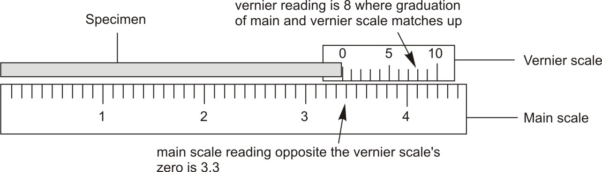
Figure 4: Finer main scale and Vernier scaleThe reading on the vernier scale is used to find the internal division by looking for where the divisions in the main and vernier scales align exactly. Now look closely at the vernier scale in Figure 3v. Notice that vernier scale is divided into ten divisions so that these ten divisions are the same in total length as 9 divisions of the main scale. Decide which vernier mark comes closest to matching a main scale mark in the figure 3v; vernier mark is 8. Combine the two readings to give the final length of 3.38 cm.
Calipers are one of the most common precision-measuring tools. It is a multifunction device used in linear distance measurements to gain an additional digit of accuracy compared to a simple ruler. It measures external, internal, and depth features; they are available in many styles, shapes, and sizes.
It is a combination of a ruler with jaws and a measuring system consisting of an L-shaped frame with a main scale (linear scale) engraved on the beam, and an L-shaped sliding attachment with a vernier scale, used to read directly the dimension of an object represented by the separation between the inner or outer edges of the two shorter arms. The length of this main scale determines the size of the caliper. One jaw of the caliper is fixed, and the other jaw moves and is connected to the vernier. Most models are fitted with an extension rod (depth probe) for measuring the depth of holes.
The vernier caliper may be used for taking both inside and outside measurements. The outside measurements of an object is measured using outside caliper jaws, the inside measurements of a hole using inside caliper jaws, or the depth of a hole using depth probe.
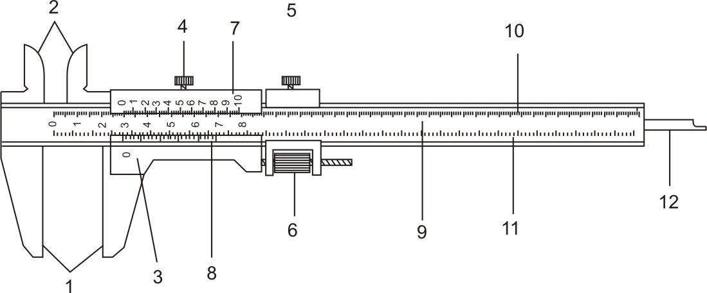
Figure 5: Vernier caliperThe size of the smallest division on a scale is called as the least count of the instrument. It is the smallest measurement that can be taken by the instrument. It is different for English and Metric systems of measurements. For the main scale on the common vernier caliper this is probably 0.5 mm. With the vernier scale the least count might be 0.02 mm in metric system and 0.001" in English system.
In this, main scale of vernier caliper is graduated with 0.5 mm and 1 mm marks. Further vernier scale is obtained with 25 equal divisions that are equal to main scale 24 divisions of 0.5 mm marks i.e. 12 mm.
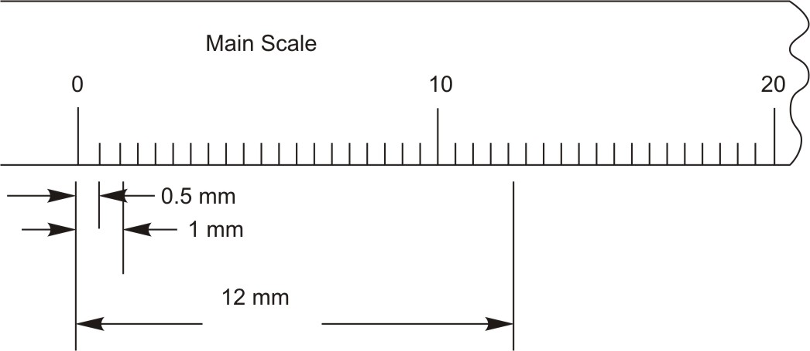
Figure 6: Each centimeter on the main scale is subdivided into 20 equal parts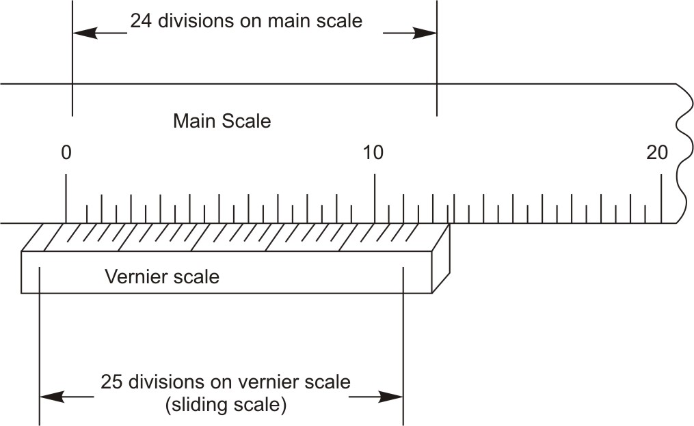
Figure 7: The difference between main scale graduations and Vernier scale graduations is 0.02 mmIn this, main scale is graduated with 1mm and 0.5 mm marks. Vernier scale is obtained with 50 equal divisions which are equal to 49 main scale divisions of 1 mm i.e 49 mm.
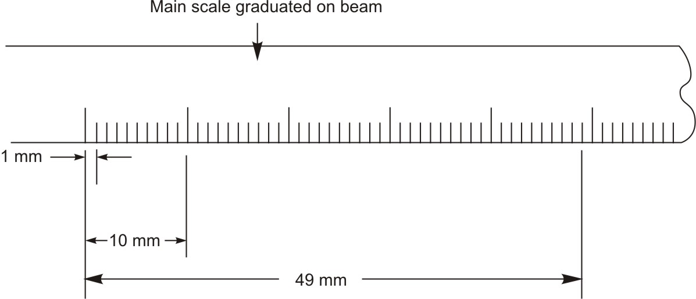
Figure 8: Each centimeter on the main scale is subdivided into 10 equal parts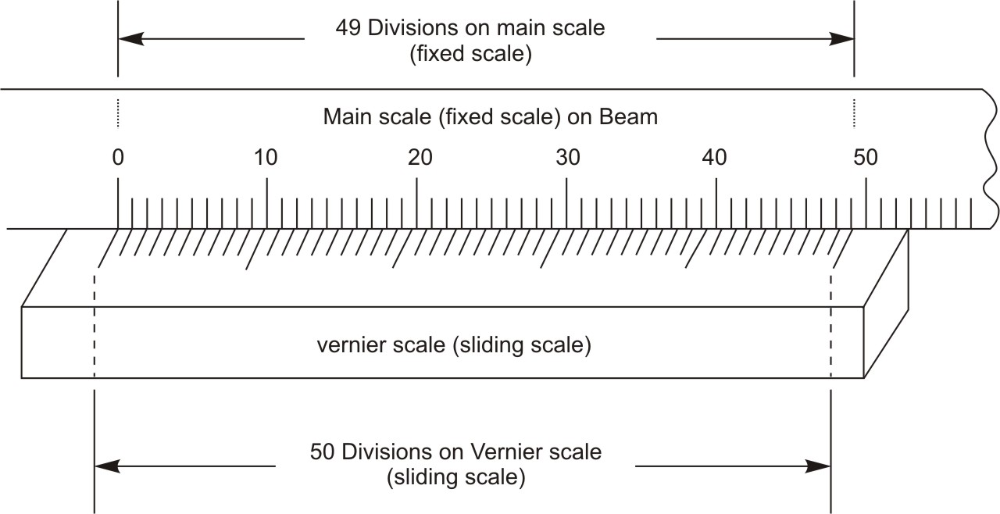
Figure 9: The difference between main scale graduations and Vernier scale graduations is 0.02 mmIn this, each inch on main scale of the instrument is divided into 10 equal parts (0.1 inch). Further this main division is divided into 4 equal parts (0.025 inch). Vernier scale is obtained with 25 equal divisions, which are equal to 24 sub-divisions of main scale (0.025" × 24 = 24/40 inch).
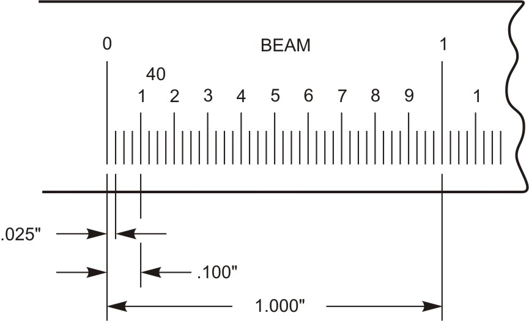
Figure 10: Each inch on the main scale is subdivided into 40 equal parts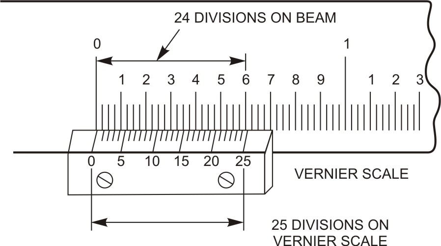
Figure 11: The difference between main scale graduations and Vernier scale graduations is 0.001 inchIn this, vernier scale is obtained with 25 equal divisions, which are equal to 49 sub-divisions of main scale (0.025" × 49 = 49/40 inch).
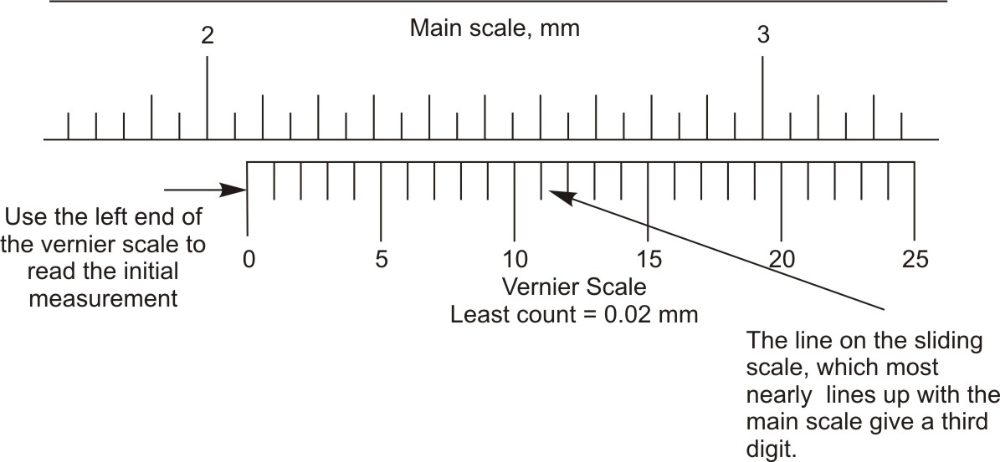
Figure 12: Example metric vernier scaleThe number of the aligned graduation mark on the vernier scale tells you the number of tenths of millimeters. The following figure explains the meaning of alignment of vernier scale graduation mark with the main scale graduation mark i.e. 3rd graduation on the vernier scale most perfectly aligns with 2.4 cm graduation mark on the main scale.
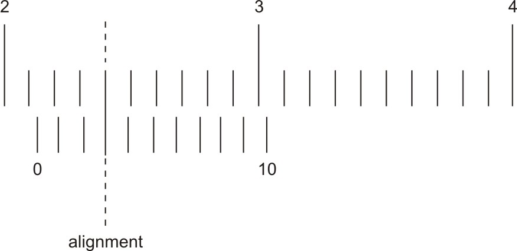
Figure 13: Scale depicting alignment of graduationsConsider the common vernier scale design with 25-subdivision. Every graduation on the main scale is equal to 0.025 inch. The vernier scale is graduated with 25 equidistant marks.
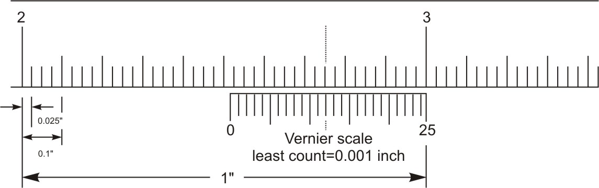
Figure 14: Inch vernier scale exampleCleanliness is one of the first prerequisites for accurate measurements. Wipe and clean the caliper after using, and don't throw it on the workbench. When not in use, keep calipers in a protective case away from excessive temperature and humidity, with the jaws slightly open.
| ← Tutorial 3 | Tutorial 5 → |